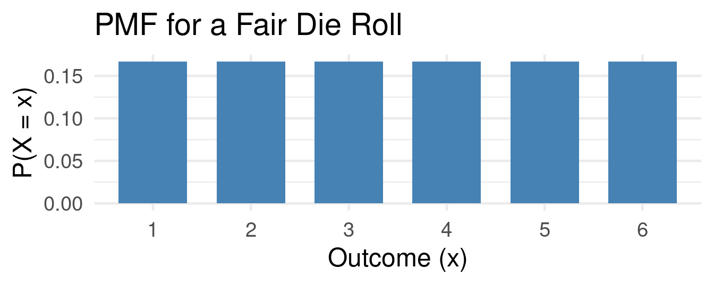
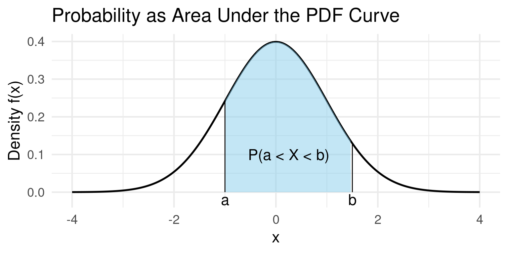
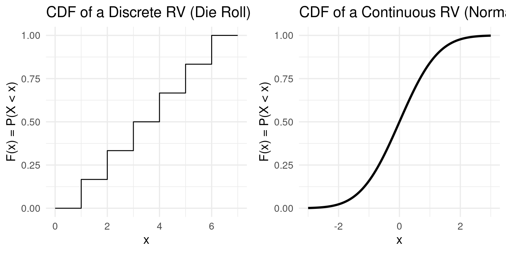
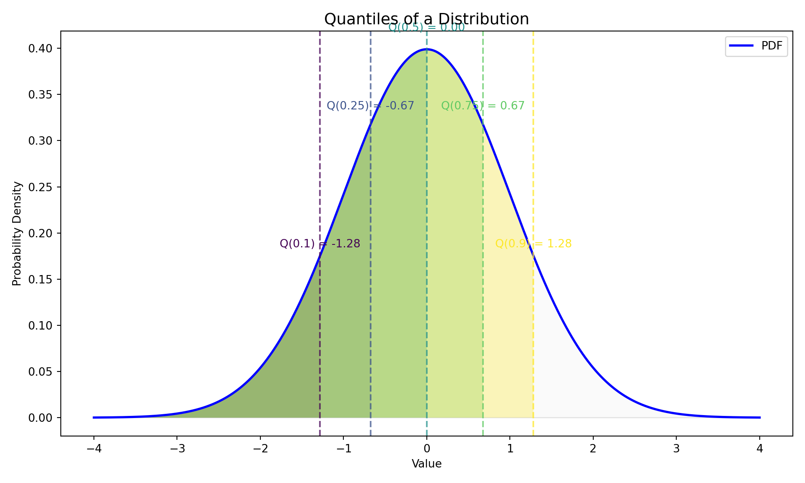
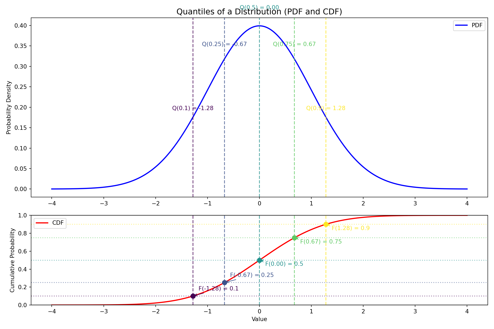
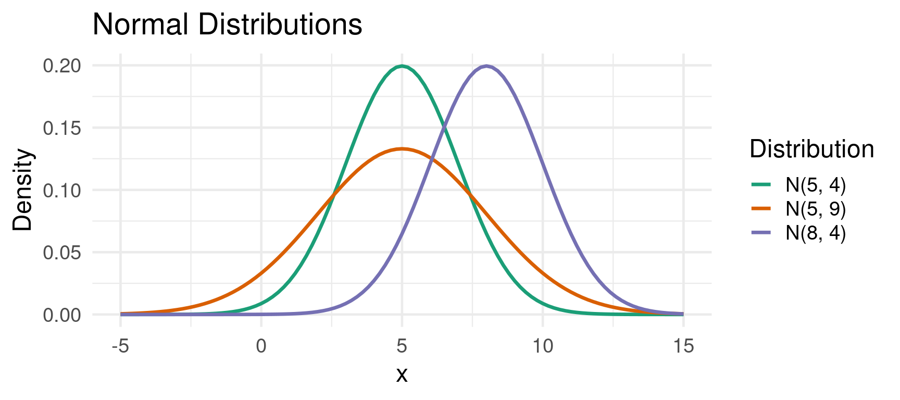
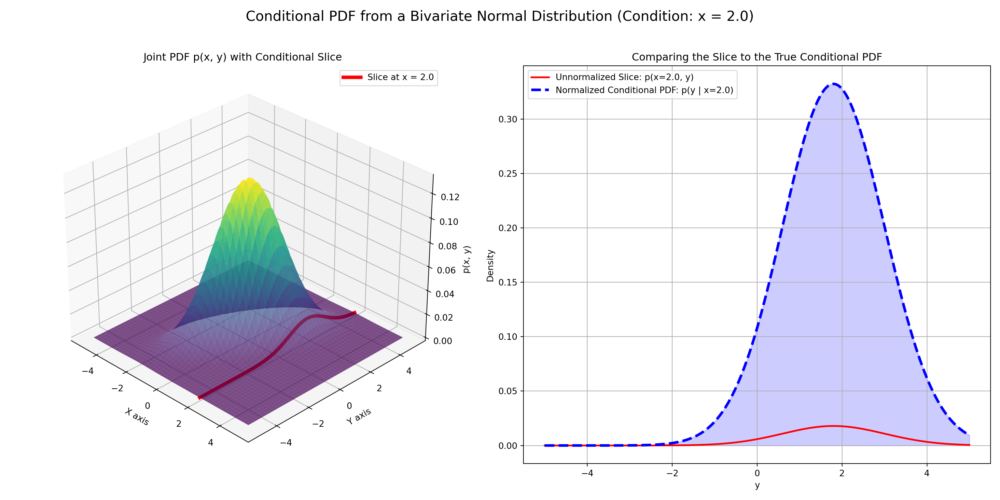
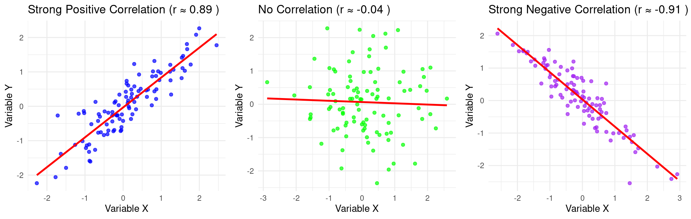

Empirical Economics
Lecture 1: Probability and Statistics
Course Set-Up
Introduction
Empirical Economics
Two central aspects:
- Econometrics and Econometric Theory
- Empirical Practice in the form of programming
Central course objective: to make you understand enough econometric theory, and have you obtain enough experience to :
- Write a succesful thesis (in particular)
- Conduct an empirical economics research project (in general)
Course Layout and Schedule
- Simple course organization: 8 Lectures and 8 Tutorials
- Always: 1 lecture (focused on theory) followed by 1 tutorial (recap and practice)
- Tutorials: Wednesday and Thursday, 13:15-15:15-17:15 (see mytimetable)
- One mid-term (7 Oct) and one end-term exam (7 Nov)
- Organized on Canvas
- Featuring both multiple choice and open questions akin to the tutorials
Lecture Schedule
- Everything is in your timetable, but..
- Lectures: On Friday
- One Exception: No Lecture on Friday 17 October
- Instead: Tuesday 11 October 11:00
- Lectures start at:
- 13:15 (12 Sept, 19 Sept, 3 Oct, 24 October)
- 15:15 (5 Sept, 26 Sept, 10 October)
- Two Q&A Sessions Before Mid-term and End-term Exams:
- Friday 3 October 15:00 (following lecture)
- Friday 24 October 15:00 (following lecture)
Course Overview
- Statistics and Probability - Basic Concepts
- Statistics and Probability - Hypothesis Testing
- The Linear Regression Model
- Time Series Data
- Panel Data (FE) and Control Variables
- Binary Outcome Data
- Potential Outcomes and Difference-in-differences
- Hands-on Econometrics in Practice
What do we need to learn?
First two/three lectures devoted to Probability & Statistics
How do we model the processes that might have generated our data?
- Probability
How do we summarize and describe data, and try to uncover what process may have generated it?
- Statistics
How do we uncover patterns between variables?
- Econometrics
Correlation vs. Causation
- Banerjee and Duflo (2015) examined the causal effect of a comprehensive anti-poverty program.
- Can a “big push” program, which provides a combination of a productive asset, training, and support, have a lasting causal impact on the lives of the ultra-poor?
- To answer this, the researchers used a Randomized Controlled Trial (RCT) across six countries.
- A large number of villages were randomly selected to either receive the program (the “treatment group”) or not (the “control group”).
- This random assignment helps ensure that, on average, the two groups were similar in all other aspects before the program began.
- Therefore, any significant differences observed between the two groups after the program can be causally attributed to the program itself, rather than other factors.
- The study found that, even years after the program ended, the treatment group had:
- Significantly higher consumption levels.
- Increased income and assets.
- Improved psychological well-being.
Because of the RCT design, the researchers could confidently conclude that the program caused these improvements.
:::
Correlation
A significant amount of modern finance research focuses on the relationship between a company’s Environmental, Social, and Governance (ESG) scores and its financial performance.
Studies have documented a positive correlation between high ESG scores and strong financial performance.
- Companies that score well on environmental and social metrics also tend to be more profitable.
It does not necessarily mean that high ESG scores cause better financial performance. The relationship could be driven by other factors:
- Reverse Causality: It might be that more profitable and successful firms have the resources to invest in improving their environmental and social impact, which in turn leads to higher ESG scores.
- Confounding Variables: A third factor, such as high-quality management, could be responsible for both high ESG scores and strong financial performance. A well-managed company is likely to be both profitable and attentive to its social and environmental responsibilities.
Correlations can be spurious, illustrating a key principle in economics: correlation does not imply causation.
Probability
Experiments, Outcomes, and Sample Spaces
- Experiment: A process or action whose result is uncertain.
- Example: Rolling a six-sided die.
- Example: Surveying a household to ask about their income.
- Example: Observing next year’s GDP growth rate.
- Outcome (\(X\)): A single possible result of an experiment.
- Example: The die shows a \(4\).
- Example: The household’s income is \(52,000\).
- Example: GDP growth is \(2.3%\).
- Sample Space (\(S\)): The set of all possible outcomes of an experiment.
- Example (Die Roll): \(S = {1, 2, 3, 4, 5, 6}\)
- Example (Household Income): \(S \in [0, \infty]\)
Events
Event: any collection of outcomes (including individual outcomes, the entire sample space, and the null set)
Using the die roll example where \(S = {1, 2, 3, 4, 5, 6}\), and each outcome is equally likely:
Example
- Event A: The outcome is an even number.
- \(A = {2, 4, 6}\)
- The probability of Event A is \(P(A) = \frac{3}{6} = 0.5\)
- Event B: The outcome is greater than 4.
- \(B = {5, 6}\)
- The probability of Event B is \(P(B) = \frac{2}{6} \approx 0.33\)
Intersections and Unions
The union of two events \(A\) and \(B\), denoted \(A \cup B\) is the event that either \(A\) occurs, \(B\) occurs, or both occur.
\[ P(A \cup B) = P(A) + P(B) - P(A \cap B) \]
- This accounts for the overlap between \(A\) and \(B\).
The intersection of two events \(A\) and \(B\), denoted \(P(A \cap B)\), is the event that both \(A\) and \(B\) occur simultaneously.
Example
Continuing the dice example:
The intersection of A and B (\(A \cap B\)): The outcome is even AND greater than 4.
- \(A \cap B = {6}\)
- \(P(A \cap B) = 1 / 6\)
What is the probability of the union of A and B?
- \(A \cup B\): The outcome is even OR greater than 4
Conditional Probability
- Conditional Probability is the probability of an event occurring, given that another event has already occurred.
- The probability of event A occurring given that event B has occurred is written as \(P(A|B)\).
Definition: Conditional Probability
\[P(A|B) = \frac{P(A \cap B)}{P(B)}\]
- Intuition: We are restricting our sample space. We know \(B\) happened, so the “universe” of possible outcomes is now just \(B\).
- Within that new universe, we want to know the chance that \(A\) also happens.
Conditional Probability: Example
- Let’s use our die roll example again:
Example
\(S = {1, 2, 3, 4, 5, 6}\), \(A = \{\text{Outcome is an even number}\} = \{2, 4, 6\}\), \(B = \{\text{Outcome is greater than 3}\} = \{4, 5, 6\}\)
Question: What is the probability that the number is even, given that we know it is greater than 3? We want to find \(P(A|B)\).
- Find \(P(B)\): The probability of rolling a number greater than 3 is \(P(B) = 3/6\).
- Find \(P(A \cap B)\): The probability of rolling a number that is even AND greater than 4 is \(P({5, 6}) = 2/6\).
- Apply the formula: \[P(A|B) = \frac{P(A \cap B)}{P(B)} = \frac{2/6}{3/6} = \frac{2}{3} \approx 0.67\]
Conditional Probability (Graphically)
- Intuition Check: If we know the outcome is in \(B = {4, 5, 6}\), there are only two possibilities. Of these, only two (\(4, 6\)) are even. So the probability is \(2/3\).
Random Variables, Expected Value, Variance
Random Variables
Random Variable (RV): A variable whose value is a numerical outcome of an experiment. We use capital letters (e.g., \(X\), \(Y\)) to denote a random variable.
There are two main types of random variables:
Discrete Random Variable: A variable that can only take on a finite or countably infinite number of distinct values.
Example
- The number of heads in three coin flips (\(X\) can be 0, 1, 2, 3).
- The number of defaults in a portfolio of 100 loans (\(X\) can be 0, 1, …, 100).
Random Variables
- Continuous Random Variable: A variable that can take on any value within a given range.
Example
- The exact price of a stock tomorrow.
- The annual percentage growth in GDP (\(Y\) could be 2.1%, 2.11%, 2.113%…).
Probability Mass Function
- For a discrete random variable \(X\), the Probability Mass Function (PMF) gives the probability that \(X\) is exactly equal to some value \(x\).
Definition: Probability Mass Function
\[ f(x) = P(X = x) \]
- A PMF has two key properties:
- \(0 \leq f(x) \leq 1\) for all \(x\).
- \(\sum f(x) = 1\) (The sum of probabilities over all possible values is 1).
PMF Example
Example Probability Mass Function
Let \(X\) be the outcome of a fair die roll. The PMF is: \(f(1) = 1/6\), \(f(2) = 1/6\), …, \(f(6) = 1/6\).
Expected Value
- The Expected Value of a discrete random variable \(X\), denoted \(E[X]\) or \(\mu\), is the long-run average value of the variable.
- It’s a weighted average of the possible outcomes, where the weights are the probabilities.
Definition: Expected Value
\[ E[X] = \mu = \sum_x x \cdot P(X=x) \]
Example: Expected value of a fair die roll
\(E[X] = (1 \times {1 \over 6}) + (2 \times {1 \over 6}) + (3 \times {1 \over 6}) + (4 \times {1 \over 6}) + (5 \times {1 \over 6}) + (6 \times {1 \over 6})\) \(\hspace{2.5em} = (1+2+3+4+5+6) / 6 = 21 / 6 = 3.5\)
Note: The expected value doesn’t have to be a possible outcome!
Variance and Standard Deviation
- Variance, denoted \(Var(X)\) or \(\sigma^2\), measures the spread or dispersion of a random variable around its mean. A larger variance means the outcomes are more spread out.
Definition: Variance
\[ Var(X) = \sigma^2 = E[(X - \mu)^2] = \sum_x (x-\mu)^2 \cdot P(X=x) \]
- Standard Deviation, \(SD(X)\) or \(\sigma\), is the square root of the variance. It’s often easier to interpret because it’s in the same units as the random variable itself.
\[SD(X) = \sigma = \sqrt{Var(X)}\]
Example: The Bernoulli Distribution
Example: Bernoulli
The Bernoulli distribution is a fundamental discrete distribution for any experiment with two outcomes, typically labeled “success” (1) and “failure” (0).
Let \(X\) be a Bernoulli random variable where \(P(X=1) = p\) and \(P(X=0) = 1-p\). A Bernoulli distribution models binary outcomes like employed/unemployed, default/no-default, buy/don’t-buy.
Expected Value: \(E[X] = (1 \times p) + (0 \times (1-p)) = p\)
Variance: \[\begin{align*} Var(X) &= (1-p)^2 \times p + (0-p)^2 \times (1-p) \\ \qquad &= (1-p)^2 \times p + p^2 \times (1-p) \\ \qquad &= p(1-p) \times [(1-p) + p] = p(1-p) \end{align*}\]
Independence
Independence
Two events A and B are independent if:
\[ P(A \cap B) = P(A) \times P(B) \]
or equivalently:
\[ P(A|B) = P(A) \]
- Independence means one event doesn’t affect the other’s probability
- Mutually exclusive \(\neq\) independent (actually, mutually exclusive events with positive probability are dependent)
- Independence can extend to more than two events
Independence: Example
Example: Coin Flip
- Consider flipping a fair coin twice:
- Let A = “First toss is Heads”, \(P(A) = \frac{1}{2}\)
- Let B = “Second toss is Tails” \(P(B) = \frac{1}{2}\)
- \(P(A \cap B) = P(HT) = 0.25\)
- Since \({1 \over 4} ={1 \over 2} \times {1 \over 2}\), A and B are independent
Example: Coin Flip (2)
- Consider flipping a fair coin twice:
- Let \(A\) = “First flip is Heads”, \(\{HH, HT\}\), \(P(A)=\frac{1}{2}\).
- Let \(C\) = “At least one Head” \(\{HH,HT,TH\}\), \(P(C)=\frac{3}{4}\)
- \(P(A \cap C)=P({HH, HT})=\frac{1}{2}\). But \(P(A) \cdot P(C)=\frac{1}{2} \cdot \frac{3}{4}=\frac{3}{8}\). Since \(\frac{1}{2}\neq\frac{3}{8}\), \(A\) and \(C\) are dependent.
Continuous Random Variables
Probability Density Function (PDF)
- For a continuous random variable, the probability of it taking on any single specific value is zero! \(P(X = x) = 0\).
- Why? Because there are infinitely many possible values.
- Instead, we use a Probability Density Function (PDF), \(f(x)\).
- Key Idea: Probability is represented by the area under the curve of the PDF.
Definition: PDF (Informal)
\[ P(a \leq X \leq b) = \text{ Area under $f(x)$ between $a$ and $b$} \]
Example PDF
Example PDF

Cumulative Distribution Function (CDF)
- The Cumulative Distribution Function (CDF), \(F(x)\), gives the probability that a random variable \(X\) is less than or equal to a certain value \(x\).
- It’s a unifying concept for both discrete and continuous variables.
Definition: CDF
\[F(x) = P(X \le x)\]
- Properties:
- \(F(x)\) is non-decreasing.
- \(F(x)\) ranges from 0 to 1.
- For continuous RVs, \(P(a \leq X \leq b) = F(b) - F(a)\).
Example CDF
Example: CDF

Quantiles of a CDF
Quantiles
- Quantiles are cut points that divide the range of a probability distribution into continuous intervals with equal probabilities.
Definition: Quantile
The \(\tau\)-th quantile (where \(0 < \tau < 1\)) of a random variable \(X\), is the value \(x\) such that the probability of the random variable being less than or equal to \(x\) is \(\tau\).
Mathematically, this is expressed using the Cumulative Distribution Function (CDF), \(F(x)\):
\[ P(X \leq Q(\tau)) = F(Q(\tau)) = \tau \] This means the quantile function, \(Q(\tau)\), is the inverse of the CDF: \(Q(\tau)=F^{-1}(\tau)\)
Quantiles: Visualization
Quantiles via the CDF
The Normal Distribution
The Normal Distribution
The Normal Distribution is the most important probability distribution in statistics and econometrics.
It is defined by its mean \(\mu\) and its variance \(\sigma^2\).
We write \(X \sim N(\mu, \sigma^2)\).
Properties:
- Bell-shaped and symmetric around its mean \(\mu\).
- Mean = Median = Mode.
- The curve is completely determined by \(\mu\) (center) and \(\sigma\) (spread).
Example Normal Distribution
Example: Normal Distributions

Linear Combinations of Normal Variables
- An important property of the normal distribution is that linear combinations of independent normal variables are also normally distributed.
Theorem: Transformations of Normal Variables
- If \(X \sim N(\mu, \sigma^2)\), then the new variable \(Y = aX + b\) is also normally distributed:
\[Y \sim N(a\mu + b, a^2\sigma^2)\] Note that the new standard deviation is \(|a|\sigma\).
Linear Combinations of Normal Variables
- In the special case of independent normal variables:
Sum/Difference of Independent Variables
If \(X \sim N(\mu_X, \sigma_X^2)\) and \(Y \sim N(\mu_Y, \sigma_Y^2)\) are independent, then their sum and difference are also normally distributed: \[ X + Y \sim N(\mu_X + \mu_Y, \sigma_X^2 + \sigma_Y^2) \] \[ X - Y \sim N(\mu_X - \mu_Y, \sigma_X^2 + \sigma_Y^2) \]
- Key point: Variances always add, even when subtracting the random variables.
Example
Example: Normally Distributed Tasks
Let the time to complete Task A be \(T_A \sim N(20, 3^2)\) minutes and Task B be \(T_B \sim N(15, 4^2)\) minutes. What is the distribution of the total time \(T_{total} = T_A + T_B\)?
- New Mean: \(\mu_{total} = \mu_A + \mu_B = 20 + 15 = 35\)
- New Variance: \(\sigma^2_{total} = \sigma_A^2 + \sigma_B^2 = 3^2 + 4^2 = 9 + 16 = 25\)
- New Standard Deviation: \(\sigma_{total} = \sqrt{25} = 5\)
So, \(T_{total} \sim N(35, 5^2)\). We can now calculate probabilities for the total time, e.g., the probability the total time is less than 45 minutes:
The Standard Normal Distribution (Z)
- The Standard Normal Distribution is a special case of the normal distribution with a mean of 0 and a variance of 1. \(Z \sim N(0, 1)\).
Definition: Standardization
We can convert any normally distributed random variable \(X \sim N(\mu, \sigma^2)\) into a standard normal variable \(Z\) using the formula:
\[ Z = \frac{X - \mu}{\sigma} \]
- It allows us to use a single table (or software function) to find probabilities for any normal distribution.
- The Z-score tells us how many standard deviations an observation \(X\) is away from its mean \(\mu\).
Finding Probabilities
Historically, probabilities for the standard normal distribution were found using Z-tables, which provide \(P(Z \leq z)\).
Today, we use software like R, Stata, or Python.
Finding Normal Probabilities
Example: Suppose annual returns on a mutual fund are normally distributed with a mean of 8% and a standard deviation of 10%. \(X \sim N(0.08, 0.01)\). What’s the probability of a negative return, \(P(X < 0)\)?
Standardize the value: \(Z = (0 - 0.08) / 0.10 = -0.8\)
Find the probability: We need to find \(P(X < 0) = P(\frac{X - 0.08}{0.01} < \frac{0-0.08}{0.01}) = P(Z < -0.8)\).
Finding Probabilities (Cont.)
Finding Normal Probabilities with Software
Using R, Python or Stata: The pnorm() (R) and norm.cdf (Python) functions give the area to the left of the provided value (the CDF).
So, there is about a 21.2% chance of experiencing a negative return.
Conditional Density
Conditional Probability
Conditional probability is about how the probability of an event \(A\) changes when we know an event \(B\) has occurred.
Discrete Case: We update probabilities for specific outcomes. \[ P(A|B) = \frac{P(A \cap B)}{P(B)} \]
Continuous Case: What if we want to condition on a continuous random variable \(Y\) taking a specific value \(y\)?
Since \(P(Y=y) = 0\) for any continuous variable, the formula above is undefined.
We need to shift our thinking from the probability of events to the probability density functions (PDFs) of random variables.
Conditional Probability Density Functions (PDFs)
Definition: Conditional PDF
The conditional PDF of a random variable \(X\) given that \(Y=y\) is defined as the ratio of the joint PDF to the marginal PDF of \(Y\).
\[ f_{X|Y}(x|y) = \frac{f_{X,Y}(x,y)}{f_Y(y)} \]
Provided that the marginal density \(f_Y(y) > 0\).
Similarly, \(f_{X,Y}(x,y)\), the joint PDF, describes the probability density of \((X, Y)\) occurring together.
\(f_Y(y) = \int_{-\infty}^{\infty} f_{X,Y}(x,y) \, dx\): The marginal PDF of \(Y\) found by “integrating out” \(X\). It represents the distribution of \(Y\) on its own.
Intuition: Slicing the Joint Distribution
Think of the joint PDF \(f_{X,Y}(x,y)\) as a 3D surface.
- Fix a value \(y\) for the variable \(Y\). This is like taking a 2D “slice” of the 3D surface at that \(y\).
- The shape of this slice gives the relative likelihood of \(X\)’s values, given that \(Y=y\).
- Normalize the slice: The area under this slice might not be 1. Dividing by \(f_Y(y)\) (the area of the slice) scales it to become a valid probability density function.
This normalized slice is the conditional PDF, \(f_{X|Y}(x|y)\).
Example: Visualization
Visualization of the Conditional PDF

Conditional Expectation
- Conditional expectation, \(E[X | Y=y]\), is simply the expected value (the mean) of
Xcalculated using its conditional distribution.- It’s the “center of mass” of that conditional slice we just discussed.
Definition: Conditional Expectation
Discrete case: if X and Y are discrete random variables, the expectation of X given Y=y is a weighted average using conditional probabilities:
\[ E[X | Y=y] = \sum_{x} x \cdot P(X=x | Y=y) \]
Continuous case: if X and Y are continuous random variables, the expectation is an integral using the conditional PDF:
\[ E[X | Y=y] = \int_{-\infty}^{\infty} x \cdot f_{X|Y}(x|y) \, dx \]
A Crucial Distinction: \(E[X|Y=y]\) vs. \(E[X|Y]\)
\(E[X|Y=y]\) is a function
The expression \(E[X|Y=y]\) produces a value that depends on the specific, fixed
ywe conditioned on. We can think of this as a function of \(y\).
Example \(E[X|Y=y]\)
Let’s define a function \(g(y)\): \[ g(y) = E[X|Y=y] \]
If we know
Y=2, we calculate \(g(2) = E[X|Y=2]\).If we know
Y=5, we calculate \(g(5) = E[X|Y=5]\).
\(E[X|Y]\) is a Random Variable
The notation \(E[X|Y]\) (without specifying a value for \(Y\)) represents a new random variable.
It is the random variable you get by taking the function \(g(y)\) and plugging in the random variable \(Y\) itself. \[ E[X|Y] = g(Y) \]
The value of this new random variable is not known until the value of \(Y\) is revealed.
Example \(E[X|Y]\)
Suppose we find that the expected height of a child \(X\) given the mother’s height \(Y\) is \(E[X|Y=y] = 40 + 0.8y\).
- \(g(y) = 40 + 0.8y\) is the function.
- \(E[X|Y] = 40 + 0.8Y\) is a random variable whose outcome depends on the randomly selected mother’s height \(Y\).
Covariance and Correlation
Covariance
- Covariance measures the joint variability of two random variables. It tells us the direction of the linear relationship.
Definition: Covariance
\[ Cov(X, Y) = \sigma_{XY} = E[(X-\mu_X)(Y-\mu_Y)] \]
- \(Cov(X, Y) > 0\): \(X\) and \(Y\) tend to move in the same direction. When \(X\) is above its mean, \(Y\) tends to be above its mean.
- \(Cov(X, Y) < 0\): \(X\) and \(Y\) tend to move in opposite directions.
- \(Cov(X, Y) = 0\): No linear relationship between \(X\) and \(Y\).
- Drawback: The magnitude of covariance is hard to interpret because it depends on the units of \(X\) and \(Y\). (e.g., Cov(GDP, Consumption) will be a huge number).
Correlation
- The Correlation Coefficient (\(\rho\) or \(r\)) is a standardized version of covariance that measures both the strength and direction of the linear relationship between two variables.
Definition: Correlation
\[ \rho_{XY} = \frac{Cov(X, Y)}{\sigma_X \sigma_Y} \]
- Properties:
- Ranges from -1 to +1.
- \(\rho = +1\): Perfect positive linear relationship.
- \(\rho = -1\): Perfect negative linear relationship.
- \(\rho = 0\): No linear relationship.
- It is unitless, making it easy to interpret and compare.
Example: Correlation
Example: Correlations

Correlation \(\neq\) Causation
- Reminder: a strong correlation between two variables does not mean that one causes the other. There could be:
- Reverse Causality: \(Y\) causes \(X\).
- Omitted Variable Bias (Lurking Variable): A third variable \(Z\) causes both \(X\) and \(Y\).
Example: Correlation \(\neq\) Causation
- Ice cream sales (\(X\)) and drowning deaths (\(Y\)) are highly positively correlated.
- Does eating ice cream cause drowning? No.
- The omitted variable is hot weather (\(Z\)), which causes people to both buy more ice cream and swim more (leading to more drownings).
Sums of Random Variables
Expected Value
- These rules are fundamental and apply to all random variables, discrete or continuous.
Theorem: Linearity of Expectation
Let \(X\) and \(Y\) be two random variables with means \(\mu_X\) and \(\mu_Y\), and variances \(\sigma_X^2\) and \(\sigma_Y^2\). Let \(a\) and \(b\) be constants.
The expectation of a linear combination is the linear combination of the expectations.
\[ E[aX + bY] = aE[X] + bE[Y] \]
- This rule holds regardless of whether \(X\) and \(Y\) are independent. Expectations are always additive/subtractive in this straightforward way.
Variance
- The rule for variance includes a covariance term.
Theorem: Sum of Variances
The sum of the variances equals:
\[ \text{Var}(aX + bY) = a^2\text{Var}(X) + b^2\text{Var}(Y) + 2ab\,\text{Cov}(X, Y) \]
If \(X\) and \(Y\) are independent random variables, then their covariance is zero (\(\text{Cov}(X, Y) = 0\)). The formula simplifies significantly:
\[ \text{Var}(aX + bY) = a^2\text{Var}(X) + b^2\text{Var}(Y) \]
Simple Cases (for Independent Variables):
- Sum: \(\text{Var}(X + Y) = \text{Var}(X) + \text{Var}(Y)\)
- Difference: \(\text{Var}(X - Y) = \text{Var}(X) + \text{Var}(Y)\)
Covariance
- Covariance of sums can also be decomposed as sums of covariances.
Sums of Covariances
The covariance can be decomposed as: \[ \text{Cov}(aX + bY, Z) = a\,\text{Cov}(X, Z) + b\,\text{Cov}(Y, Z) \]
In addition, the covariance of \(X\) with itself equals the variance:
\[ \text{Cov}(X, X) = \text{Var}(X) \]
Covariance Example
Example: Proof that \(\text{Var}(X+Y)=\text{Cov}(X+Y, X+Y)\)
We know that \(\text{Var}(X+Y) = \text{Var}(X) + \text{Var}(Y) + 2 \text{Cov}(X,Y)\) by definition.
Now observe that:
\[\begin{align*} \text{Cov}(X+Y, X+Y) &= \text{Cov}(X,X+Y)+\text{Cov}(Y,X+Y) \newline &= \text{Var}(X)+\text{Cov}(X,Y)+\text{Cov}(Y,X)+\text{Var}(Y) \newline &= \text{Var}(X)+\text{Var}(Y)+2\text{Cov}(X,Y) \end{align*}\]
..which is equal to \(\text{Var}(X+Y)\).
Summary Table
The following table outlines the results previously discussed:
| Property | Linear Combination | General Case | Independent Case (\(Cov(X,Y)=0\)) |
|---|---|---|---|
| Expectation | \(E[aX \pm bY]\) | \(a\mu_X \pm b\mu_Y\) | (Same as General) |
| \(E[X + Y]\) | \(\mu_X + \mu_Y\) | (Same as General) | |
| \(E[X - Y]\) | \(\mu_X - \mu_Y\) | (Same as General) | |
| Variance | \(\text{Var}(aX + bY)\) | \(a^2\sigma_X^2 + b^2\sigma_Y^2 + 2ab\,\text{Cov}(X,Y)\) | \(a^2\sigma_X^2 + b^2\sigma_Y^2\) |
| \(\text{Var}(X + Y)\) | \(\sigma_X^2 + \sigma_Y^2 + 2\,\text{Cov}(X,Y)\) | \(\sigma_X^2 + \sigma_Y^2\) | |
| \(\text{Var}(X - Y)\) | \(\sigma_X^2 + \sigma_Y^2 - 2\,\text{Cov}(X,Y)\) | \(\sigma_X^2 + \sigma_Y^2\) |
Summary
What did we do?
- Probability Concepts:
- The lecture began by introducing foundational probability concepts, including experiments, sample spaces, events, and the rules for calculating probabilities of unions, intersections, and conditional events (\(P(A|B)\)).
- Dicsrete and Continuous Distributions:
- We defined discrete and continuous random variables and their key descriptive functions: the Probability Mass/Density Function (PMF/PDF) and the Cumulative Distribution Function (CDF). This section also covered how to calculate the expected value (\(E[X]\)) and variance (\(Var(X)\)) of a random variable.
- The Normal Distribution:
- A significant portion was dedicated to the Normal distribution, explaining its properties, the importance of its parameters (mean and variance), and how any normal variable can be standardized into a Z-score. It also covered the properties of linear combinations of normal variables.
What did we do? (Cont.)
- Conditional Distributions:
- The relationship between variables was explored through multiple lenses, including conditional probability density functions (\(f_{X|Y}(x|y)\)), conditional expectation (\(E[X|Y]\)), and measures of linear association like covariance and correlation, while reiterating the crucial distinction that correlation does not imply causation.
- Rules for Expected Value and Variance:
- Finally, the lecture established the mathematical rules for the expectation and variance of sums of random variables. It detailed the linearity of expectation and the formula for the variance of a sum, emphasizing the simplification that occurs when the variables are independent and their covariance is zero.
The End

Empirical Economics: Lecture 1 - Probability and Statistics